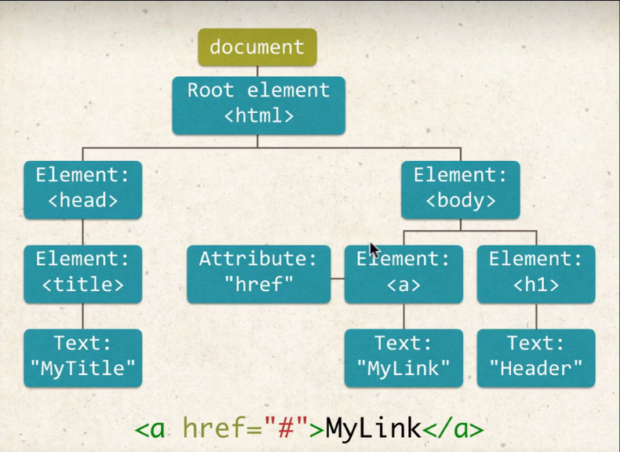
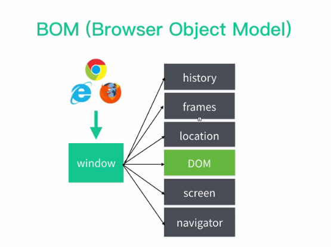

瀏覽器裡的 JavaScript
前端開發在網頁的操作方法其實都是由 JS 的執行平台，也就是 瀏覽器 所提供，操作方法分別由 BOM 和 DOM 這兩種物件所擁有，而 JavaScript 就是透過 BOM 和 DOM 所提供的 API 來控制瀏覽器的行為與網頁的內容
瀏覽器裡的 JavaScript 實際包含
JavaScript 核心(以 ECMAScript 標準為基礎)BOM(Browser Object Model，瀏覽器物件模型)DOM(Document Object Model，文件物件模型)
什麼是 DOM (Document Object Modal) ?
DOM是一個將HTML文件以樹狀結構來表示的模型，而組合起來的樹狀圖我們稱為DOM Tree每個
HTML檔案 都會產生一個document每個
HTML標籤 都會產生一個 節點，往下又可以再延伸出 文本節點 和 屬性節點如下，我們寫了一段網頁程式碼，就會產生這樣的
DOM1
2
3
4
5
6
7
8
9<html>
<head>
<title>MyTitle</title>
</head>
<body>
<h1>Header</h1>
<a href="#">MyLink</a>
</body>
</html>
什麼是 BOM (Browser Object Modal) ?
BOM是瀏覽器所有功能的核心，與網頁內容無關BOM的核心是window物件window物件提供的屬性為document、location、navigator、screen、history和frameswindow中的document屬性就是DOM

BOM是ECMAScript標準裡的 “全域物件”，所有在 “全域作用範圍” 內宣告的變數、物件、函式等，都會自動變成 全域物件 的 屬性 ，也就是 “全域變數”，可以透過window.的方式取得1
2var a = 10;
console.log( window.a ); // 10在全域範圍宣告的變數無法使用
delete來刪除，但透過window.來指定的物件屬性就可以1
2
3
4
5
6
7
8
9
10
11var a = 10;
window.b = 10;
console.log(a); // 10
console.log(b); // 10
delete window.a; // false
delete window.b; // true
console.log(window.a); // 10
console.log(window.b); // undefinedwindow物件下的屬性，是可以省略window不打的，如常見的alert完整語法是這樣的1
window.alert("message");
DOM 與 BOM 的區別
BOM: JavaScript 與瀏覽器構通的窗口，不涉及網頁內容DOM: JavaScript 用來控制網頁的節點與內容的 標準BOM 規範: 依賴於各家瀏覽器已經實作的部分納入HTML 5標準中，也就是BOM APIDOM 規範: 透過W3C所制定的標準來規範
DOM API 節點控制
DOM 節點的選取
document.getElementById('xxx')可以選取
DOM中ID為 “xxx” 的元素document.getElementTagName('xxx')針對給定的
tag名稱，回傳所有符合的NodeList物件document.getElementClassName('xxx')針對給定的
class名稱，回傳所有符合的NodeList物件document.querySelector('xxx')可以選取
ID、class或HTML tag，遇到相同名稱的元素只會選取第一個1
2document.querySelector('#id');
document.querySelector('.class a');document.querySelectorAll('xxx')可以重複選取多個元素，選取到的元素會形成一個 “陣列” ，可以透過
for 迴圈給值1
2
3
4
5
6<h2 class="titleClass"><em></em></h2>
<h2 class="titleClass"><em></em></h2>
<!-- after js -->
<h2 class="titleClass"><em>0123</em></h2>
<h2 class="titleClass"><em>1123</em></h2>1
2
3
4
5
6
7
8var el = document.querySelectorAll('.titleClass em');
console.log(el); // [em, em]
var elLen = el.length;
for (i = 0; el < elLen; i++){
el[i].textContent = i + '123';
};
DOM 節點的新增
innerHTML組完字串後，傳進語法進行渲染，會直接取代原先的內容，如果外層是 單引號
''，內層就要使用 雙引號""以做區別1
2
3
4
5
6<div id="main"></div>
<!-- after js -->
<div id="main">
<h1 class="blue"></h1>
</div>1
2var el = document.getElementById('main');
el.innerHTML = '<h1 class="blue"></h1>';createElement以
DOM節點來處理，每個節點都須透過JavaScript來新增1
2
3
4
5
6<h1 class="title"></h1>
<!-- after js -->
<h1 class="title">
<em class="blue">title</em>
</h1>1
2
3
4
5
6var str = document.createElement('em');
str.textContent = '1234';
str.setAttribute('class', 'blue');
// 增加子節點
document.querySelector('.title').appendChild(str);innerHTML與createElement的差異- 因為
innerHTML是組完字串一次帶入，所以效能較佳 - 也因為
innerHTML透過組完字串帶入HTML，所以在某些情況，如在輸入欄位輸入<script src=""></script>等檔案載入形式，可能會遭到惡意植入攻擊程式碼，稱為 “XXS 跨網域指令碼 (Cross-site Scripting)”
- 因為
節點的修改與刪除
以上新增節點的方法只是建立節點，還未將建立的節點輸出到網頁中，透過以下方法，改變網頁中的節點
Node.appendChild('子節點')
透過這個方法可以將指定的 “子節點” 加入到父容器節點的末端
1 | <ul id="myList"> |
1 | // 取得容器 |
NODE.insertBefore('新節點', '指定節點')
透過這個方法將 “新節點” 加到 “指定節點” 的 “前面”
1 | <ul id="myList"> |
1 | // 取得容器 |
NODE.replaceChild('新節點', '指定節點')
透過這個方法將 “新節點” 取代 “指定節點”
1 | <ul id="myList"> |
1 | // 取得容器 |
NODE.removeChild('指定節點')
透過這個方法將 “指定節點” 移除
1 | <ul id="myList"> |
1 | // 取得容器 |
新增節點屬性
setAttribute('屬性', '新增的值') : 動態為 html tag 增加屬性
1 | <h2 class="titleClass"> |
1 | var el = document.querySelector('.titleClass a'); |
DOM 節點的類型
DOM 節點的類型常見的有以下幾種 :
| 節點類型常數 | 對應數值 | 說明 |
|---|---|---|
| Node.ELEMENT_NODE | 1 | HTML 元素的 Element 節點 |
| Node.TEXT_NODE | 3 | 實際文字節點，包括了換行與空格 |
| Node.COMMENT_NODE | 8 | 註解節點 |
| Node.DOCUMENT_NODE | 9 | 根節點 (Document) |
| Node.DOCUMENT_TYPE_NODE | 10 | 文件類型的 DocumentType 節點，例如 HTML5 的 <!DOCTYPE html> |
| Node.DOCUMENT_FRAGMENT_NODE | 11 | DocumentFragment 節點 |
參考資料
DOM API 節點間的查找
DOM 節點有分層的概念，節點與節點之間的關係分成兩種
父子節點: 每個節點的上層節點稱為 父節點Parent node; 相對地，下層的節點稱為子節點Child node，而隔層的節點基本上沒有直接關係，也就是 不具備孫節點兄弟節點: 如果節點與節點有同一個 父節點，那彼此就是 兄弟節點Siblings node
子節點
Node.childNodes 與 Node.children 所有子節點
所有的
DOM節點都包含childNodes屬性，此種屬性無法被修改。可以透過
Node.hasChildNodes()來檢查某個DOM節點是否有子節點，如果有會回傳true，否則falseNode.childNodes回傳的是NodeList，包含以下三、可能- HTML 元素節點 (element nodes)
- 文字節點 (text nodes)，包含空白
- 註解節點 (comment nodes)
Node.children回傳的是HTMLColllection只包含一種可能就是 “HTML 元素節點 (element nodes)”1
2
3
4
5
6
7
8
9
10<div class="test">
我是第一個子節點 ( 文本節點 )
<div>我是第二個子節點 ( 第一個 元素節點 )</div>
我是第三個子節點 ( 文本節點 )
<div>我是第四個子節點 ( 第二個 元素節點 )</div>
<!-- 我是註解 (註解節點)-->
<div>我是第五個子節點 ( 第三個 元素節點 )，但我前面有空行
<div>我是第五個子節點的子節點</div>
</div>
</div>1
2
3
4
5
6
7
8var test = document.querySelector('.test');
console.log(test.childNodes.length); // 9
console.log(test.childNodes); // NodeList(9) [text, div, text, div, text, comment, text, div, text]
console.log(test.childNodes[7].hasChildNodes()); // true
console.log(test.children.length); // 3
console.log(test.children); // HTMLCollection(3) [div, div, div]Node.firstChild第一個子節點Node.firstChild可以取得Node節點的 第一個子節點，沒有子節點則會回傳null如下範例取得的第一個子節點為
<p>與<span>中間的 “換行字元”1
2
3
4<p>
<span>span1</span>
<span>span2</span>
</p>1
2
3
4var p = document.querySelector('p');
console.log(p.firstChild.tagName); // undefined
console.log(p.firstChild.textContent); //如果把中間的換行與空白移除，就會得到預期的
SPAN1
<p><span>span1</span><span>span2</span></p>
1
2
3
4var p = document.querySelector('p');
console.log(p.firstChild.tagName); // SPAN
console.log(p.firstChild.textContent); // span1Node.lastChild最後一個子節點
Node.lastChild 可以取得 Node 節點的 “最後一個” 子節點，沒有子節點則會回傳 null
概念同 Node.firstChild，取得的子節點包含 “空白節點”
父節點
Node.parentNode 父節點
Node.parentNode 可以用來取得 “父節點”，回傳值可能回以下三種
HTML 元素節點 (Element node)
根節點 (Document node)
DocumentFragment 節點 (詳細介紹可以參考此連結)
1
2
3
4<p>
<span>span1</span>
<span>span1</span>
<p>1
2var el = document.querySelector('span');
console.log(el.parentNode.nodeName); // "P"
兄弟節點
Node.previousSibling和Node.nextSibling兄弟節點(包含所有節點)透過
Node.previousSibing和Node.nextSibling分別可以取得同層的 “前一個” 與 “下一個” 節點，如果 Node 沒有前一個或下一個節點，則會回傳null; 特別注意的是，這兩個語法包含 “所有節點”，也就是包含 “空白節點”、”文字節點” 和 “元素節點”querySelectorAll會選取所有符合的元素形成陣列，透過 中括號[]可以選取指定元素1
2
3<p><span>span1</span><span>span2</span>
<span>span3</span>
<p>1
2
3
4
5
6
7var el = document.querySelector('span');
var el2 = document.querySelectorAll('span')[1];
var el3 = document.querySelectorAll('span')[2];
console.log( el.previousSibling ); // null
console.log( el2.previousSibling.textContent ); // "span 2"
console.log( el3.previousSibling.textContent ); // "我是空白"Node.previousElementSibling和Node.nextElementSibling兄弟節點(只包含 “元素節點”)和上一組尋找兄弟節點的語法在用法上相同，唯一不同的是，搜尋時只包括 “元素節點”，會忽略空白節點和文字節點，是比較實用的方式
1
2
3
4
5<p>
<span>span1</span>
<span>span2</span>
<span>span3</span>
<p>1
2
3
4
5
6
7var el = document.querySelector('span');
var el2 = document.querySelectorAll('span')[1];
var el3 = document.querySelectorAll('span')[2];
console.log( el.previousElementSibling ); // null
console.log( el2.previousElementSibling.textContent ); // "span 1"
console.log( el3.previousElementSibling.textContent ); // "span 2"
document.getElementsBy** 與 document.querySelector/.querySelectorAll 的差異
document.getElementsBy** 與 Node.childNodes 回傳的同樣是 NodeList 包含以下三種可能
- HTML 元素節點 (element nodes)
- 文字節點 (text nodes)，包含空白
- 註解節點 (comment nodes)
document.getElementsBy** 和 Node.children 回傳的同樣是 HTMLCollection，只有一種可能
- HTML 元素節點 (element nodes)
HTHLCollection 與 NodeList 都可以使用 “陣列索引” 來存取內容，兩者在大部分的情況下也都是 “即時更新” 的，但透過 document.querySelector/doucment.querySelectorAll 取得的 NodeList 是 “靜態的”
1 | <div id="outer"> |
1 | var outerDiv = document.getElementById('outer'); |
BOM API
回上一頁功能實作 window.history
透過 window.history.forward() 切換到下一頁，window.history.back() 切換到上一頁，以此功能切換頁面
列印功能 window.print()
位置訊息 window.location
移動位置 window.open()
使用此方法移動位置會 “開新分頁”
動態擷取瀏覽器尺寸
window.innerHeight: 擷取瀏覽器內部高度window.innerWidth: 擷取瀏覽器內部寬度window.outerHeight: 擷取瀏覽器外部高度window.outerWidth: 擷取瀏覽器外部寬度window.onresize: 瀏覽器尺寸改變就會觸發